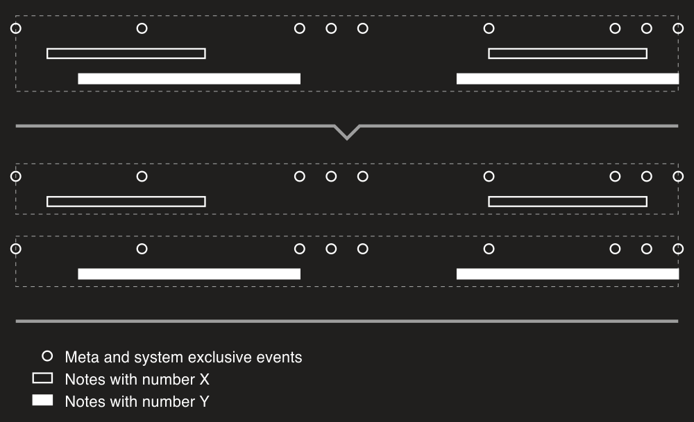
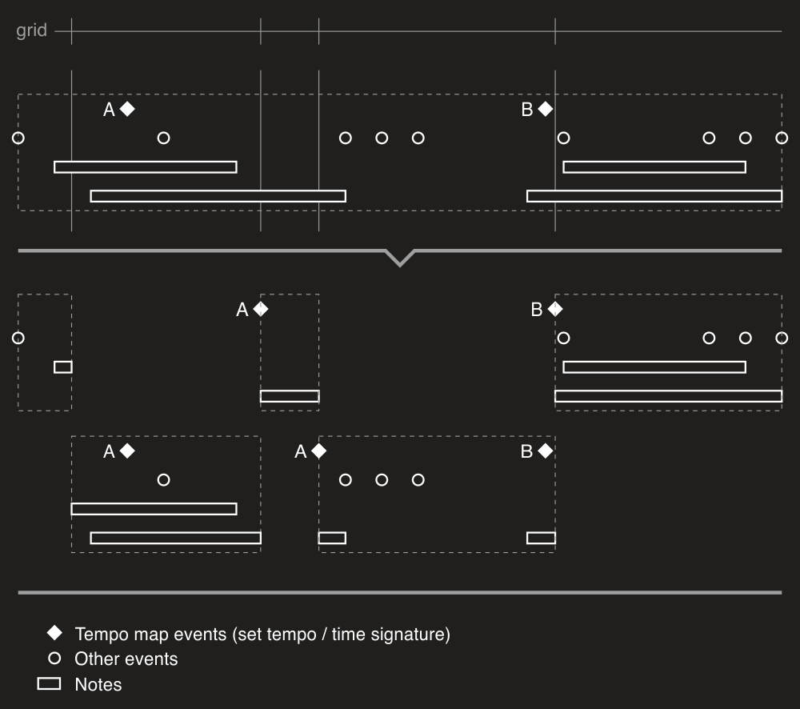
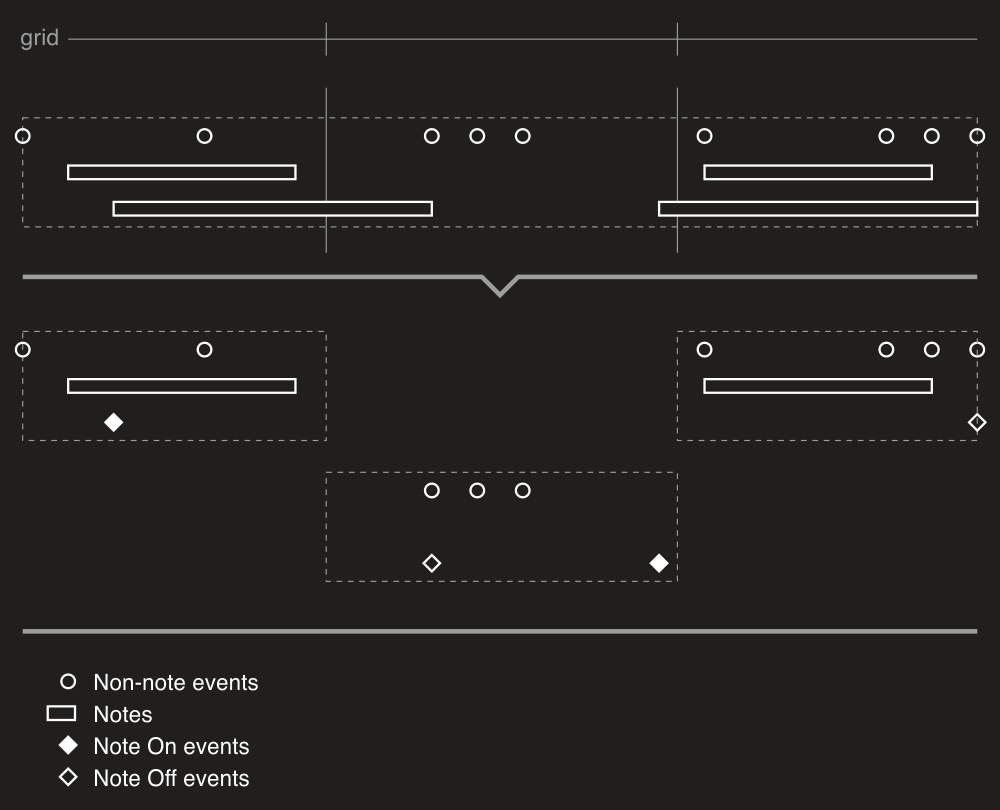
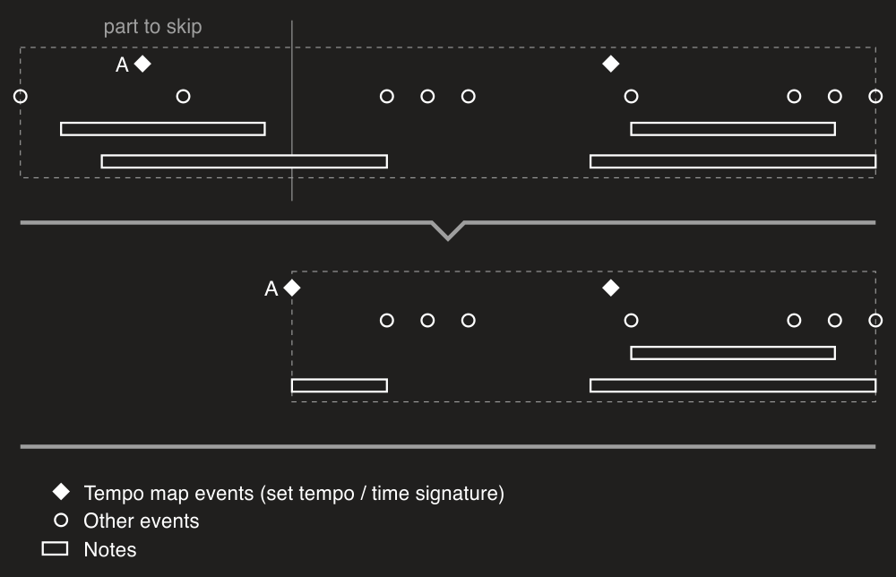
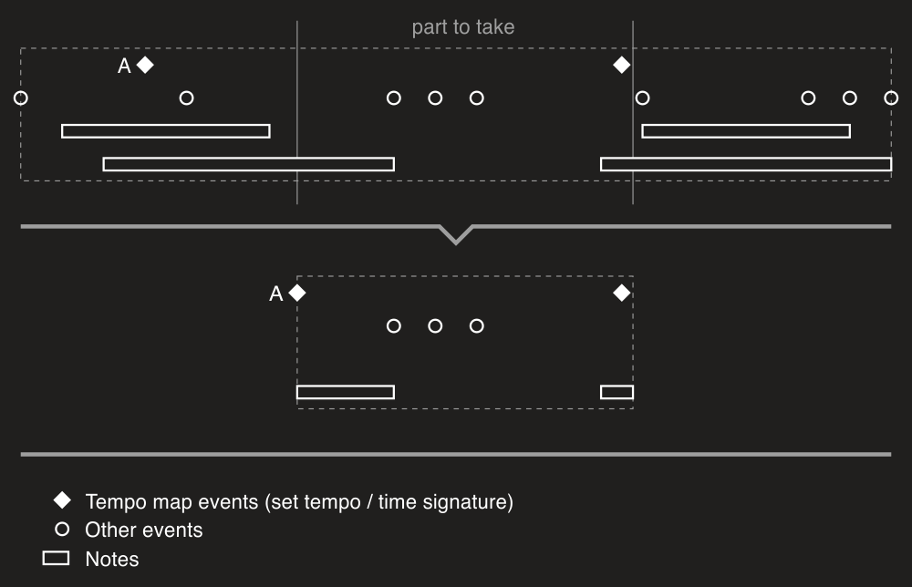

MIDI file splitting
You can split a MIDI file in different ways using extension methods from the Splitter class. Available methods are described below. Please note that the article doesn't cover all possible methods and their settings. Please read API documentation on Splitter to get complete information.
SplitByChannel
SplitByChannel method splits a MIDI file by channel so all channel events will be separated by channel and copied to corresponding new files. All meta and system exclusive events will be copied to all the new files (that's default behavior that can be turned off). Thus each new file will contain all meta and sysex events and channel ones for a single channel. The image below illustrates this process:

SplitByNotes
SplitByNotes method splits MIDI file by notes. Note events will be separated by note number and copied to corresponding new files. All other channel events, meta and system exclusive ones will be copied to all the new files (that's default behavior that can be turned off). The image below illustrates splitting by notes:

SplitByGrid
SplitByGrid method splits MIDI file by the specified grid. Each file will preserve original tempo map and all parameters changes (like a control value or program changes). The image below shows general case of splitting a MIDI file by grid:

Splitting can be adjusted via settings parameter of the SliceMidiFileSettings type. SplitNotes and PreserveTimes properties described below. Please see all available properties in documentation for SliceMidiFileSettings.
SplitNotes
SplitNotes indicates whether notes should be split at points of grid intersection or not. The default value is true. If false used, notes treated as just Note On / Note Off events rather than note objects. Splitting notes produces new Note On / Note Off events at points where grid intersects notes if the property set to true. The following image shows splitting by grid if SplitNotes set to false:

PreserveTimes
PreserveTimes indicates whether original times of events should be preserved or not. The default value is false. If false used, events will be moved to the start of a new file. If true used, events will be placed in new files at the same times as in the input file. The following image shows splitting in case of PreserveTimes set to true:

SkipPart
SkipPart method skips part of the specified length of a MIDI file and returns remaining part as an instance of MidiFile. The image below shows general case of skipping a part of a MIDI file:

TakePart
TakePart methods take part of the specified length of a MIDI file (starting at the start or at the specified time within the file) and return it as an instance of MidiFile. The image below shows both cases of taking a part of a MIDI file:


CutPart
CutPart method cuts a part of the specified length from a MIDI file (starting at the specified time within the file) and returns a new instance of MidiFile which is the original file without the part. The image below shows how the method works: